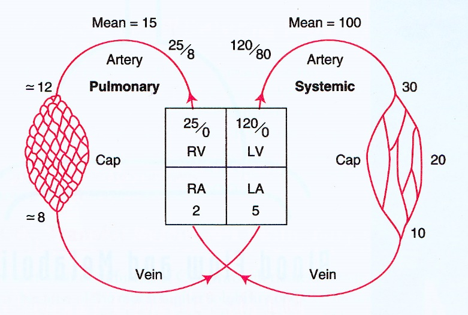
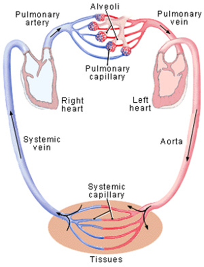
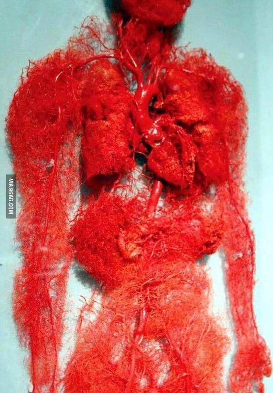

- Pulmonary Circulation vs. Systemic Circulation
- Rate of blood flow through the pulmonary circulation = flow rate through the systemic circulation.
- Pulmonary vascular resistance is lower -> lower BP.
- Structure of pulmonary arteries – contains less smooth muscle
- What purposes might this serve?
- Look at all those systemic vessels vs. much less pulmonary vessels!
- Please know the path of blood through the heart, lungs, and systemic circulation.
